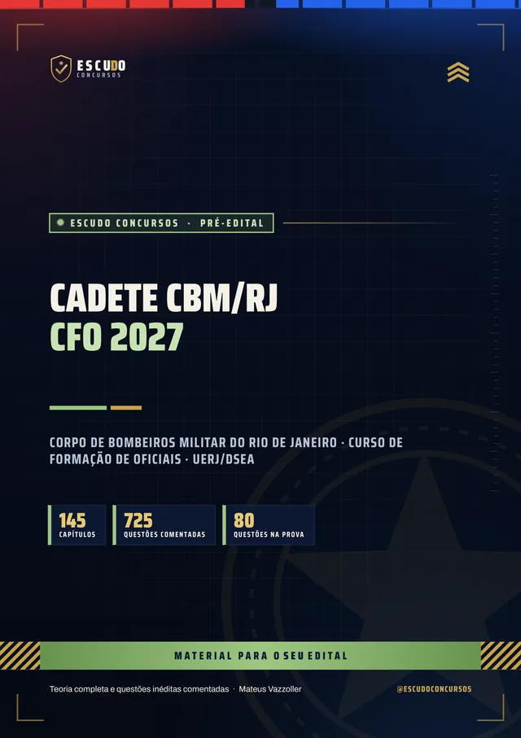
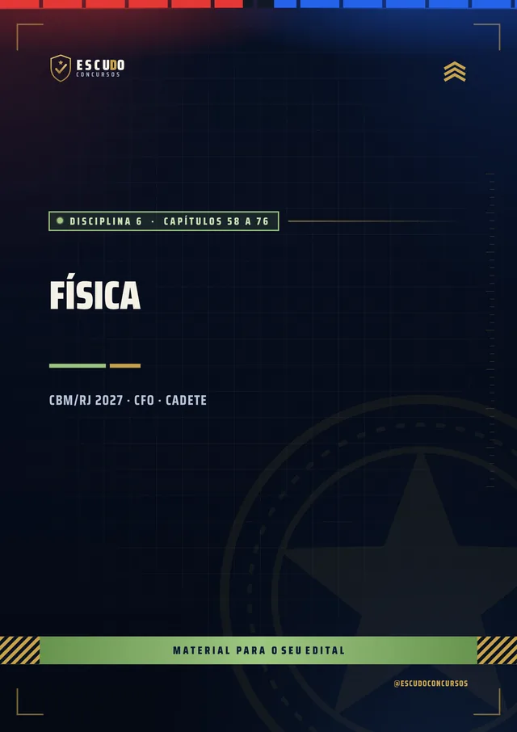
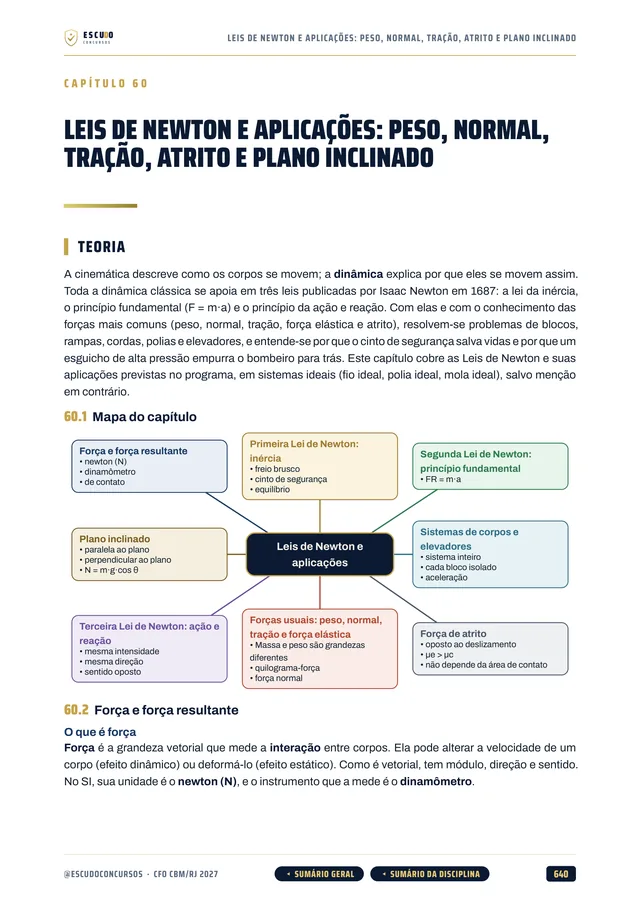
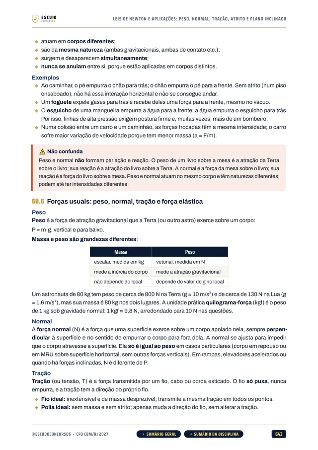
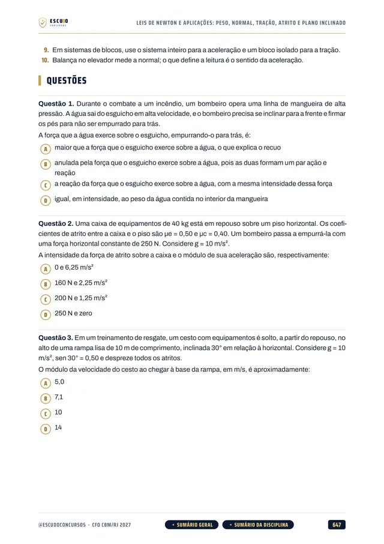
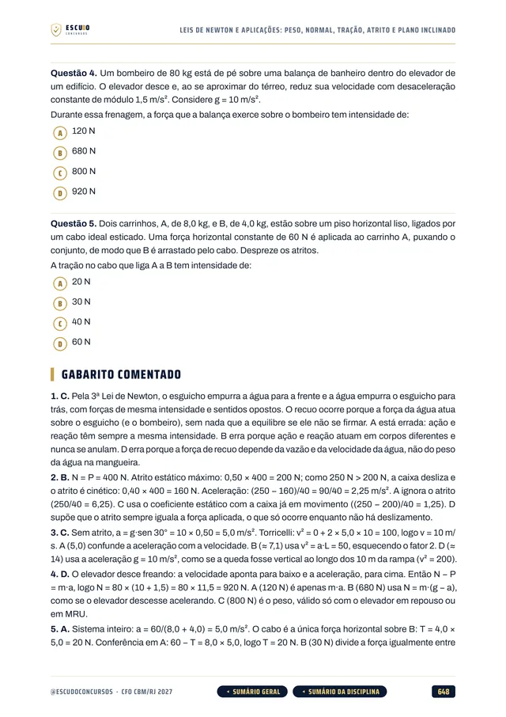
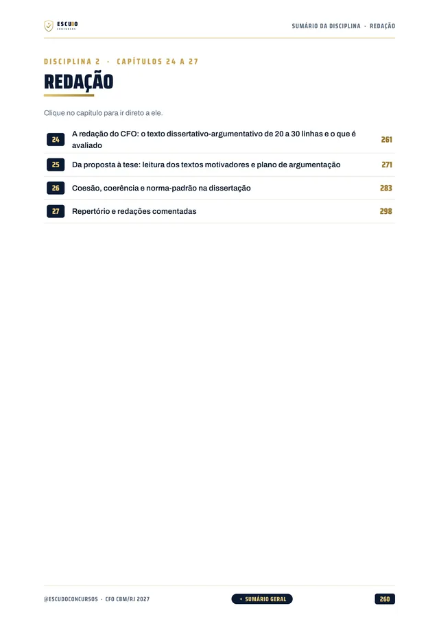
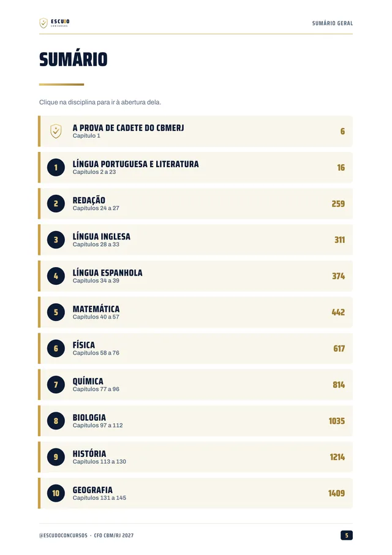
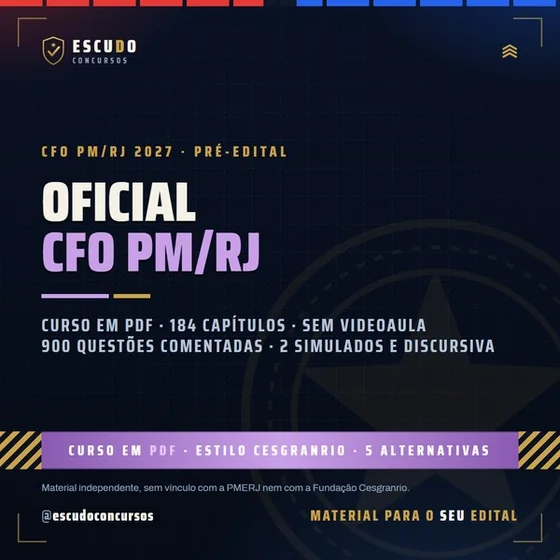
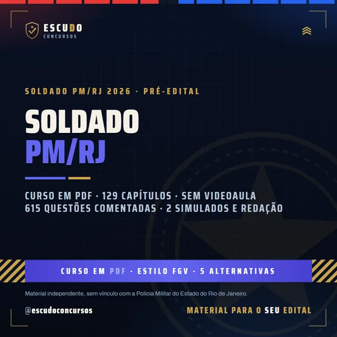

Simulado 1
No meio do caminho
Para medir onde você está e ajustar o estudo enquanto o edital não sai.
30 dias após a compra
Material independente, sem vínculo com o Corpo de Bombeiros Militar do Estado do Rio de Janeiro, com o Governo do Estado do Rio de Janeiro nem com a UERJ.


725questões
comentadas
ConcursoCBM/RJ2027 · Cadete
Briefing
O Corpo de Bombeiros Militar do Rio de Janeiro teve o concurso de Cadete do CFO autorizado, com 50 vagas, e o edital ainda não saiu. Quem começa agora chega na frente. Curso feito sobre o programa do último edital (Edital CFO 2026, UERJ/DSEA), item por item: oito disciplinas de 10 questões cada, mais a redação, com questões de 4 alternativas e gabarito comentado.
Pré-edital: baseado no último edital (Edital CFO 2026, UERJ/DSEA). Atualizado quando sair o novo
de R$ 79,90 por 25% OFF
R$59,90
com o cupom CBMERJCFO até 31/12/2026. Pelo botão, o cupom já vai preenchido.
R$79,90
Curso completo, com acesso imediato.
Terreno
O concurso
O concurso para Cadete do Curso de Formação de Oficiais (CFO) do Corpo de Bombeiros Militar do Estado do Rio de Janeiro foi autorizado, com 50 vagas, em publicação no Diário Oficial de 28/10/2026. O edital ainda não foi publicado: não há data de inscrição nem de prova. Quem entra é Cadete BM do 1º ano, na Academia de Bombeiro Militar Dom Pedro II, porta de entrada da carreira de Oficial.
Por isso o curso segue o programa e o formato do último edital, o Edital CFO 2026, em que a Parte Acadêmica foi aplicada pela UERJ, por meio do DSEA, em 08/02/2026: 80 questões objetivas de quatro alternativas, de (A) a (D), 10 de cada uma de oito disciplinas de ensino médio, mais uma redação.
Estudar agora pelo programa do último edital economiza meses. Quando o edital novo sair, o programa será conferido item por item e o curso, ajustado.
| Disciplina | Questões | Capítulos |
|---|---|---|
| Língua Portuguesa e Literatura | 10 | 22 |
| Matemática | 10 | 18 |
| Física | 10 | 19 |
| Química | 10 | 20 |
| Biologia | 10 | 16 |
| História | 10 | 18 |
| Geografia | 10 | 15 |
| Língua estrangeira, Inglês ou Espanhol à escolha (o curso traz as duas) | 10 | 12 |
| Redação (até 20 pontos, fora das 80 questões) | 1 | 4 |
| Mais o capítulo 001, sobre como é a prova e como usar o curso. | 80 | 145 |
Atualização
Oito disciplinas de peso igual
Todas as disciplinas valem o mesmo: cada uma tem 10 das 80 questões e zerar uma delas elimina, mesmo com 40 acertos no total. O curso cobre as oito por inteiro, e o capítulo 001 mostra como dividir o estudo.
Matemática, Física, Química e Biologia em 73 capítulos: as exatas e a biologia somam 40 das 80 questões, e cada assunto do programa tem o seu capítulo, com exemplos e contas resolvidos passo a passo. Na Física, por exemplo, as Leis de Newton: peso, normal, tração, atrito e plano inclinado.
Inglês e Espanhol, 6 capítulos de cada: na prova você responde só a língua que escolher na inscrição, e o curso traz as duas, cada uma no seu módulo.
Redação em 4 capítulos: o texto dissertativo-argumentativo de 20 a 30 linhas, que vale até 20 pontos, da proposta à tese, com coesão, coerência, repertório e redações comentadas.
Protocolo
O formato
Você estuda lendo, no seu ritmo, pela área de membros da Hotmart ou com os arquivos baixados. O curso segue o programa do último edital (Edital CFO 2026, Anexo II), disciplina por disciplina, em nível de ensino médio e no estilo vestibular da UERJ: questão contextualizada, com interpretação acima de memorização. Quando sair o edital novo, vale o que ele disser.
Reconhecimento
Páginas reais do PDF
Toque numa página para ver em tamanho maior.





100% em PDF · Garantia de 7 dias · Pagamento pela Hotmart
Equipamento
O que você recebe
Curso em PDF organizado em módulos pelas disciplinas da prova (o Comece aqui e as dez partes do programa), com 1.562 páginas no padrão visual ESCUDO, para ler no computador, no tablet, no celular ou no app da Hotmart. Não há videoaulas.
145 capítulos cobrindo o programa do último edital: Língua Portuguesa e Literatura (22), Redação (4), Inglês (6), Espanhol (6), Matemática (18), Física (19), Química (20), Biologia (16), História (18) e Geografia (15), mais o capítulo de abertura.
725 questões inéditas com 4 alternativas, de (A) a (D), 5 por capítulo, todas com gabarito comentado: por que a correta está correta e onde está o erro de cada uma das outras três.
Redação em 4 capítulos: o texto dissertativo-argumentativo de 20 a 30 linhas, da proposta à tese, com coesão, coerência, repertório e redações comentadas.

Matemática, Física e Química com exemplos resolvidos passo a passo, e Inglês e Espanhol, cada um no seu módulo: você estuda a língua que escolher na inscrição.
Pegadinhas e quadros "não confunda" ao longo da teoria, para você não cair nas armadilhas que a banca costuma montar.
Teoria com recursos para memorizar: mapa de cada capítulo, fluxogramas, esquemas, comparativos e linhas do tempo, resumo esquematizado e pontos-chave de revisão.
Navegação clicável: do sumário você vai direto à disciplina e ao capítulo, e volta pelos botões do rodapé.

2 simulados inéditos de 80 questões de A a D, no quadro da prova, cada um com caderno de comentários. Eles entram na área de membros depois: o Simulado 1 aos 30 dias e o Simulado 2 aos 60 dias após a compra.
Plano de ação
Área de membros
| Módulo | Conteúdo | Liberação |
|---|---|---|
| M0 Comece aqui | Apresentação + capítulo 001 (como é a prova e como usar o curso). Bônus: PDF completo para baixar e imprimir | Na compra; o PDF completo no 8º dia |
| M1 Língua Portuguesa e Literatura | Capítulos 002 a 023 | Na compra |
| M2 Redação | Capítulos 024 a 027 | Na compra |
| M3 Língua Inglesa | Capítulos 028 a 033 | Na compra |
| M4 Língua Espanhola | Capítulos 034 a 039 | Na compra |
| M5 Matemática | Capítulos 040 a 057 | Na compra |
| M6 Física | Capítulos 058 a 076 | Na compra |
| M7 Química | Capítulos 077 a 096 | Na compra |
| M8 Biologia | Capítulos 097 a 112 | Na compra |
| M9 História | Capítulos 113 a 130 | Na compra |
| M10 Geografia | Capítulos 131 a 145 | Na compra |
| M11 Simulado 1 | 80 questões e caderno de comentários | 30 dias após a compra |
| M12 Simulado 2 | 80 questões e caderno de comentários | 60 dias após a compra |
Treinamento
Treino no formato da prova
Cada simulado tem 80 questões de A a D, no quadro da prova de 2026 (10 de cada uma das oito disciplinas), com caderno de comentários. Os simulados entram na área de membros depois da compra, nas datas abaixo, e o formato será conferido quando o edital novo sair.
Simulado 1
Para medir onde você está e ajustar o estudo enquanto o edital não sai.
30 dias após a compra
Simulado 2
Para conferir a evolução depois de mais um mês de estudo.
60 dias após a compra
Perfil
Para quem é
Para quem vai prestar o concurso de Cadete do CFO do Corpo de Bombeiros Militar do Rio de Janeiro e quer começar agora, pelo programa do último edital, com as oito disciplinas cobertas por inteiro.
Proteção
Você tem 7 dias de garantia pela Hotmart. Se não for o que você esperava, pede o reembolso pela própria Hotmart, dentro do prazo.
Cronograma
Sem surpresa na área de membros
Na compra: todas as disciplinas em PDF, uma por módulo, com a teoria e as questões comentadas. É o curso inteiro, para começar a estudar no mesmo dia.
8 dias após a compra: o PDF completo para imprimir. É o mesmo conteúdo dos módulos num arquivo só, liberado depois da garantia de 7 dias.
Simulado 1: 30 dias após a compra, para medir onde você está no meio da preparação.
Simulado 2: 60 dias após a compra, porque ainda não há data de prova marcada.
O PDF completo e os simulados aparecem bloqueados na área de membros até a data de cada um: não é conteúdo faltando, é a liberação programada.
Instrução
Dúvidas
Não. É um curso 100% em PDF: teoria, questões comentadas e simulados para ler e resolver.
O acesso é imediato depois da confirmação do pagamento, pela área de membros da Hotmart (web ou app). O PDF completo para baixar e imprimir é liberado no 8º dia.
Os 2 simulados entram na área de membros depois da compra: o Simulado 1 é liberado 30 dias após a compra e o Simulado 2, 60 dias após a compra.
Vale. O concurso foi autorizado, com 50 vagas, em publicação no Diário Oficial de 28/10/2026, e o edital não tem data. O programa de ensino médio (Português e Literatura, Matemática, Física, Química, Biologia, História, Geografia e uma língua estrangeira) muda pouco de um edital para outro, e as exatas pedem tempo de treino. Quando o edital sair, vale o que ele disser.
Ainda não existe: o edital novo não foi publicado. O curso segue o programa do último edital (Edital CFO 2026, Anexo II): Língua Portuguesa e Literatura, Matemática, Física, Química, Biologia, História, Geografia e Língua Estrangeira (Inglês ou Espanhol), mais a Redação.
No último edital, a Parte Acadêmica foi aplicada pela UERJ, por meio do DSEA. A banca do próximo edital só se confirma quando ele sair. As questões do curso são autorais, no estilo vestibular: texto contextualizado e quatro alternativas, com interpretação acima de memorização.
No Edital CFO 2026, era preciso ter o ensino médio até a matrícula e, no mínimo, 18 anos na matrícula, e a taxa de inscrição foi de R$ 100,00. Idade, taxa e datas do concurso novo ficam conforme o próximo edital. Confirme sempre no edital quando ele sair.
Não. Na prova você responde só a língua estrangeira que escolher na inscrição. O curso traz as duas, em módulos separados: estude a sua e deixe a outra de lado.
Sim, em 4 capítulos: o texto dissertativo-argumentativo de 20 a 30 linhas, que vale até 20 pontos, da proposta à tese, com coesão, coerência, repertório e redações comentadas.
Ainda não há edital novo. No último (2026), a prova objetiva teve 80 questões de múltipla escolha com quatro alternativas, de (A) a (D), e uma só correta, valendo um ponto cada, 10 de cada disciplina (Inglês ou Espanhol, à escolha), e uma redação dissertativo-argumentativa de 20 a 30 linhas, de até 20 pontos. Para passar na objetiva, eram necessários 40 acertos e nenhuma disciplina zerada. O curso segue esse formato e será conferido quando o edital sair.
Não. As 725 questões de treino e as dos simulados são inéditas, escritas a partir do programa do último edital.
Você tem 7 dias de garantia pela Hotmart. Se não for o que você esperava, pede o reembolso.
Missão
CBM/RJ 2027 · Cadete CFO
de R$ 79,90 por 25% OFF
R$59,90
com o cupom CBMERJCFO até 31/12/2026.
R$79,90
Curso completo, com acesso imediato.
Material para o SEU edital. ESCUDO Concursos.
Continue estudando
 GM São Gonçalo 2026 · Instituto SELECONGuarda Municipal de São Gonçalo
GM São Gonçalo 2026 · Instituto SELECONGuarda Municipal de São Gonçalo
CFO PM/RJ 2027 · Pré-edital · CesgranrioOficial da Polícia Militar do Rio de Janeiro (CFO)
PM/RJ 2026 · Pré-editalSoldado da Polícia Militar do Rio de Janeiro PM/SC 2026 · Instituto AOCPSoldado da Polícia Militar de Santa Catarina
PM/SC 2026 · Instituto AOCPSoldado da Polícia Militar de Santa CatarinaVer todos: concursos policiais · Concursos no Rio de Janeiro